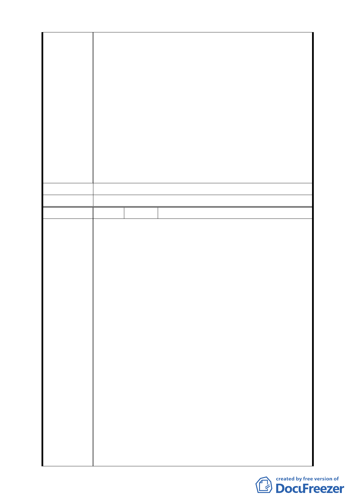

之討論折衝豈非俱付東流？送審時程又恐將遙遙無
期。
(二)「促進都市再生2010年臺北好好看」開發計畫案尚有領
取建築執照及開工時程限制，如依是項併案檢討結論
執行，勢必無法符合上揭時程限制，衍生之損失將難
以估計。
三、陳情人等再次表明立場如下：
（一）陳情人等願支持市府政策並依市府認可方案設計規
劃、施工。
（二)現將已形成共識之「金泰段臺北好好看開發案」與尚
待縝密檢討之「大灣北段通檢計畫」脫鉤並從速審查。
（三）北市都規字第 09836521507 號函認可之都市變更計
畫中所提 99 年 3 月 31 日前取得建照事，囿於現今情事
實無法達成，陳請 鈞局予以取消設限。
建 議 辦 法 （同上）
委 員 會 決 議 所提建議業已錄案供委員審議參考。
編 號 5 陳情人 奇泰建設有限公司等 6 家
一、有關「金泰段臺北好好看開發案」陳情人等已悉依臺
北市政府都市發展局(以下簡稱「都發局」) 都市計畫
委員會「修正臺北市「基隆河 ( 中山橋至成美橋段 )
附近地區土地使用分區與都市設計管制要點」(北段地
區)計畫案」第594次大會及2次座談會討論結果，並配
合都發局98年9月14日北市都規字第 098352214500 號
函檢附之土地使用管制要點草案，於98年9月21日前提
送變更都市計畫書，依法申請續行都市計畫之法定程
序。
二、依98年10月30日北市都規字第09836521507號函規定表
訂規範內容、格式，於民國98年11月3日送請臺北市都
陳 情 理 由 市計畫委員會(以下簡稱「都委會」) 辦理公展在案、
俟後獲臺北政府府都規字第09838862600號函於98年12
月23日至99年1月22日公展完成。
三、陳情人等依前揭相關草案(98年9月10日建議方案，如
附表)設計規劃，且皆已完成環境影響評估審查作業，
俟都市計畫公告後即可申請核備。
四、然幾經折衝，眼見已近完成整合階段，難料99年5月19
日第二次專案審查會議，與前揭諸多會議結論不一致，
又將議題回至討論原點，分列說明如下：
(一)臺北市「基隆河(中山橋至成美橋段)附近地區土地使用
分區與都市設計管制要點」(北段地區)計畫案(下稱
「大灣北段通檢計畫」)，配合社經情勢變更已屆通盤
- 37 -